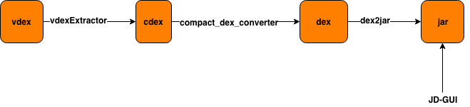
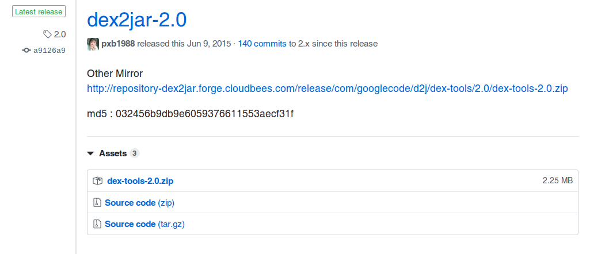
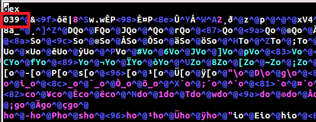
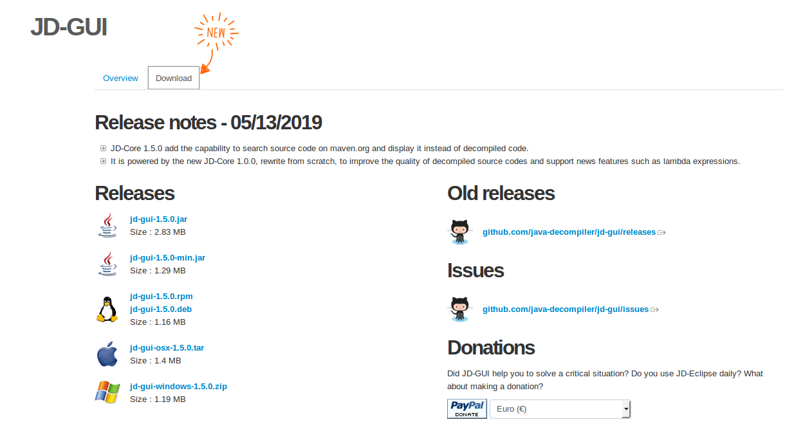
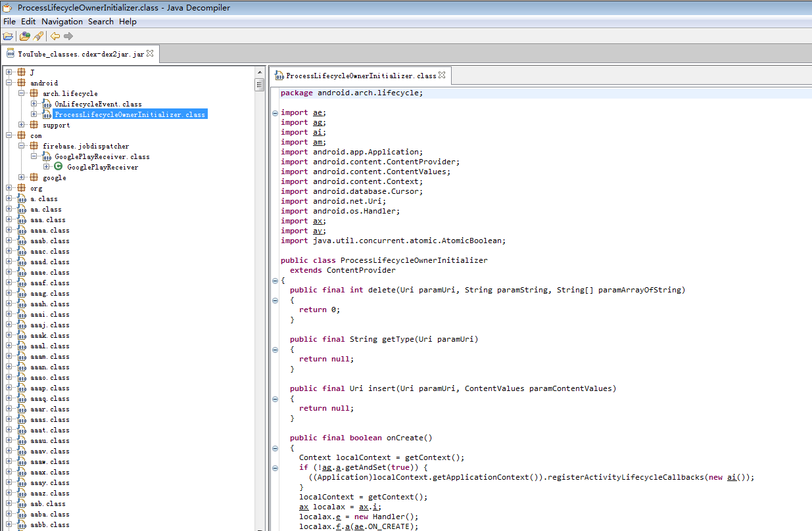

本文记一次解析YouTube的vdex的过程.由于在Android P中有一种新的dex文件格式cdex,所以反编译过程和以前有所不同。
0 准备文件
从机器中拷贝出文件:
adb pull system/app/YouTube ./ |
目录结构如下:
YouTube | |
本例子中,要解析的文件就是YouTube.vdex.
整个流程如下图

在以下解析过程中,如果提示权限问题,请自行使用chmod添加可执行权限，下文中不在赘述！！！
1 解析vdex到cdex文件
需要用到一个开源工具vdexExtractor,
git clone https://github.com/anestisb/vdexExtractor.git |
执行vdexExtractor/make.sh, 就会在产生vdexExtractor/bin/vdexExtractor.
使用bin文件vdexExtractor解析vdex文件:
./vdexExtractor -i ./YouTube.vdex -o ./ --deps -f |
此处将vdex文件和vdexExtractor放到同一目录下
解析完成后会得到4个cdex文件:YouTube_classes.cdex,YouTube_classes2.cdex,YouTube_classes3.cdex,YouTube_classes4.cdex.
vdexExtractor 的详细使用,可以使用
./vdexExtractor -h查看.
2 解析cdex到dex文件
解析cdex到需要用到compact_dex_converter,在网页中下载compact_dex_converter_linux.zip
可以在ubuntu下使用.
使用compact_dex_converter,解析./compact_dex_converter YouTube_classes.cdex
四个cdex文件我们以YouTube_classes.cdex为例
运行完会产生一个YouTube_classes.cdex.new文件，该文件就是我们的dex文件。我们可以用vim打开改文件，文件的开头就是dex文件的格式。
使用xxd命令将YouTube_classes.cdex.new转换成十六进制的文件
xxd YouTube_classes.cdex.new > YouTube_classes.xxd |
使用vim 打开十六进制文件:
0000000: 6465 780a 3033 3900 269f f4eb 7c38 1377 dex.039.&...|8.w |
这里只是显示了开头的部分
熟悉dex文件结构的你可能一眼就看出这个是dex文件了.
3 解析dex到jar
解析dex文件到jar文件需要用到dex2jar.
找到Latest release,进行下载.

查看工具的内容:
d2j-baksmali.bat d2j-dex2jar.sh d2j-dex-recompute-checksum.bat |
可以看到工具里面既有sh文件,也有bat文件,该工具适用于Linux & Windows.这里使用shell版本.
./dex2jar-2.0/d2j-dex2jar.sh YouTube_classes.cdex.new |
可能你会遇到这样的报错：
dex2jar YouTube_classes.cdex.new -> ./YouTube_classes.cdex-dex2jar.jar |
这里如果遇到版本报错, 是由于dex文件版本导致的,可以用vim打开YouTube_classes.cdex.new,将第二行的开头的039改成036.

再执行./dex2jar-2.0/d2j-dex2jar.sh YouTube_classes.cdex.new即可.会产生文件YouTube_classes.cdex-dex2jar.jar.
这就是我们需要的jar文件.
4 解析jar文件
查看jar文件使用JD-GUI

现在所需版本即可.
启动jd-gui,打开刚刚解析好的jar文件即可.
